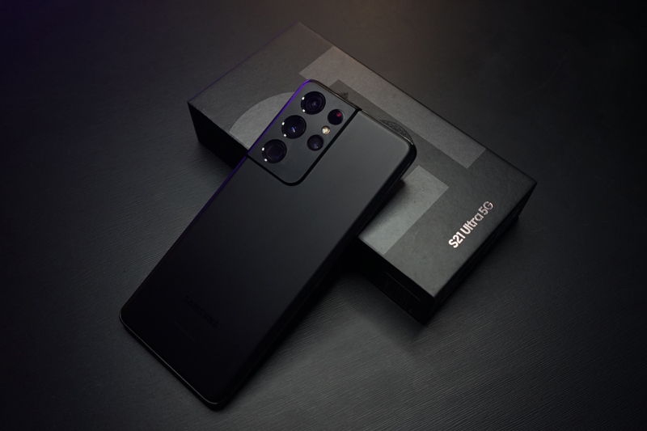
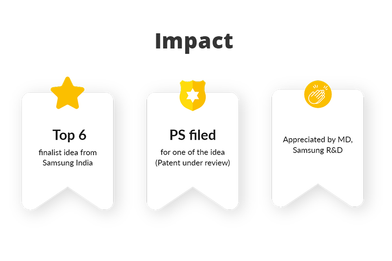
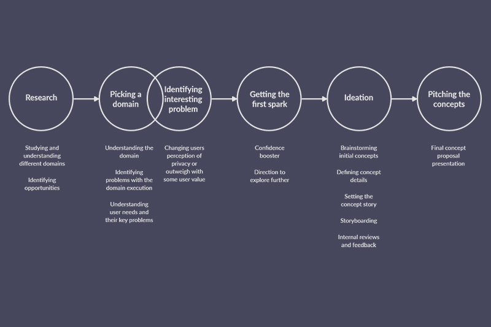

Duration
1 Month
Apr-May 2020
A step towards humanising phone and making it a better companion
Magic eyes and Audio register are concepts which emerged from Samsung’s idea contest for device selling concepts for S21. The focus of the competition and the activity was to leverage Samsung’s core technological strengths and create talking-point concepts and features which will entice users to buy Samsung’s S21 flagship phone.

I worked on this project individually and it was selected as an individual entry.
I was involved in research, ideation, defining the concept theme, creating realisable ideas for smartphones, and proposal document.

I started with understanding different domains and then identifying an interesting problem to solve. With the motive to do something big, getting the first spark of idea really helped me gain confidence in the project and explore further for the final concepts. The process steps are defined below.

While I was working on Samsung Pay product commercialisation features, this opportunity helped me get a creative break, think big, which can influence sales of flagship devices, starting right from a raw idea to polished concept.
I also created a concept promo video to explain my concept better. Working on a video editing project was fun learning for a UX designer.